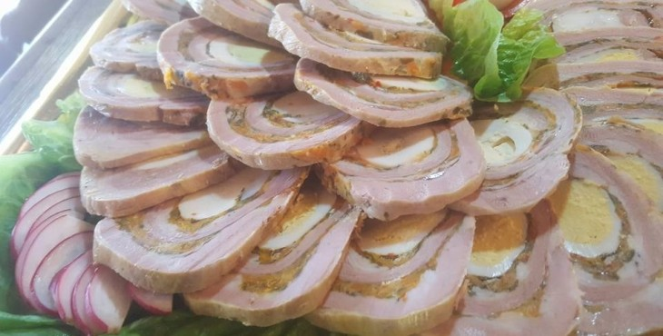

Matambre Arrollado

Descripcion
El matambre arrollado es un plato tradicional de la cocina argentina familiar que se sirve como entrada
y se hace con un corte de carne de vaca que está pegado a la parte de arriba del costillar.
En general se cocina hervido o al horno y se come frío cortado en rodajas finas de un centímetro acompañado de ensalada rusa.
También se puede hacer con carne de cerdo, pollo o cordero y hay muchísimas variantes para el relleno.
Ingredientes
- 1 Matambre
- 2 pimientos colorados
- 2 zanahorias
- 3 huevos
- 40gr. de perejil
- 2 dientes de ajo
- C/N de sal, pimienta y aceite de oliva
Para el relleno
- Hacemos una pasta procesando el perejil con un poco de aceite de oliva, sal y ajo.
- Cocemos los huevos hasta que queden duros; los pelamos.
- Limpiamos el pimiento colorado, quitando las nervaduras y las semillas; lo cortamos en tiras largas.
- Lvamos, pelamos y cortamos las zanahorias de la misma forma.
Procedimiento de armado y coccion
- Cortamos ligeramente los bordes del matambre para que quede prolijo.
- Apoyamos el matambre sobre papel film y lo pincelamos con la preparacion de perejil, ajo y aceite.
- Sobre la carne, acomodamos las tiras de zanahoria y pimiento y los huevos enteros; salpimentamos.
- Ayudandonos con el papel film, arrollamos el matambre con firmeza, cuidando de que os ingredientes queden en el centro. Cerramos y doblamos las puntas del papel fil, para que quede como si fuera el envoltorio de un caramelo.
- Cocinamos el matambre en una olla con agua hirviendo durante 3 horas.
- Una vez cocido el matambre, lo dejamos enfriar por algunos minutos y lo cortamos en rodajas.